.png)
Persona 4 Golden Social Links
| Social link | Where and How to Unlock | Arcana | Persona |
.webp) |
The protagonist can start Ai's Social Link as early as May 13th after reaching Rank 4 of the Strength Arcana Social Link (either Kou Ichijo or Daisuke Nagase). The protagonist must also activate a flag by talking to Ai after school, which can be done as early as April 27th. She can be found during the day on the first floor of Yasogami High. She requires rank 3 Courage (Brave). | Moon Arcana | None |
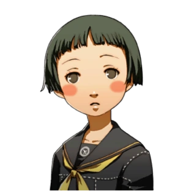 |
The protagonist can start Ayane's Social Link as early as April 25th by joining the School Band, found on the first floor of the Practice Building in Yasogami High. | Sun | None |
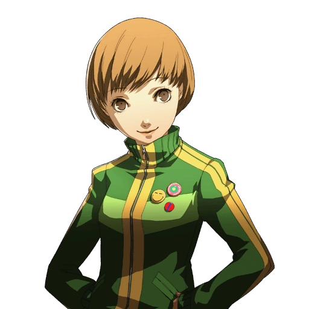 |
The protagonist automatically starts Chie's Social Link on April 18th, the day after she awakens to her Persona after fighting her Shadow within the Midnight Channel. She can be found during the day on the rooftop of Yasogami High. During days off, Chie hangs outside the entrance of Daidara Metalworks. | Chariot | Tomoe and Suzuka Gongen |
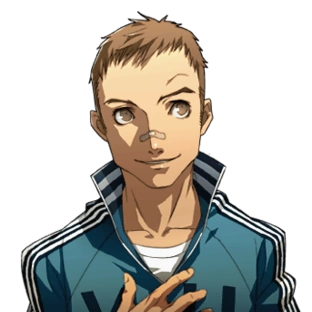 |
The protagonist can start Daisuke's Social Link as early as April 19th by heading to the first floor of the Classroom Building at the emergency exit in Yasogami High and choosing the Soccer Team. The protagonist can get an explanation of the different clubs first by talking to Mr. Mooroka in the Faculty Office. | Strength | None |
| The protagonist can start Eri's Social Link as early as April 25th, provided that he takes the daycare job posting as soon as it becomes available on April 23rd and goes to work at the daycare on the same day. The Social Link won't be established until the protagonist visits the daycare twice. Eri can be found during the day when working by taking the bus in the Central Shopping District. | Temperance | None | |
| The protagonist automatically begins the Fox's Social Link on May 5th. The Fox is available every day of the week in the afternoon after completing ema requests given by it at the Shrine. Taking up a wish does not consume the whole day, but reporting a successful wish-granting session to the Fox will | Hermit | None | |
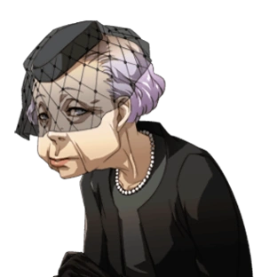 |
The protagonist can start Hisano's Social Link as early as June 5th after advancing the Devil Social Link to Rank 4. She can be found during the day at the Samegawa Flood Plain on Sundays and everyday on holidays. Her Social Link will always rank up regardless of the dialogue options chosen. | Death | None |
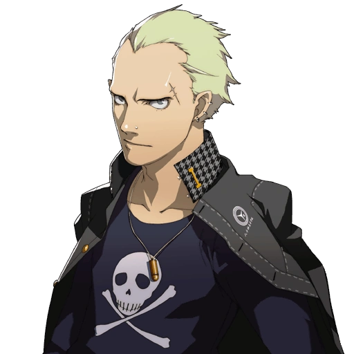 |
The protagonist can start Kanji's Social Link on June 9th at the earliest, after hearing a rumor that he's bullying students. He can be found during the day on the first floor of the practice building in Yasogami High. On days off, Kanji hangs out around Tatsumi Textiles. | Emperor | Take-Mikazuchi and Rokuten Maou |
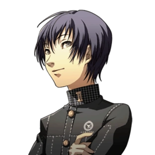 |
The protagonist can start Kou's Social Link as early as April 19th by heading to the first floor of the Classroom Building at the emergency exit in Yasogami High and choosing the Basketball Team. The protagonist can get an explanation of the different clubs first by talking to Mr. Mooroka in the Faculty Office. | Strength | None |
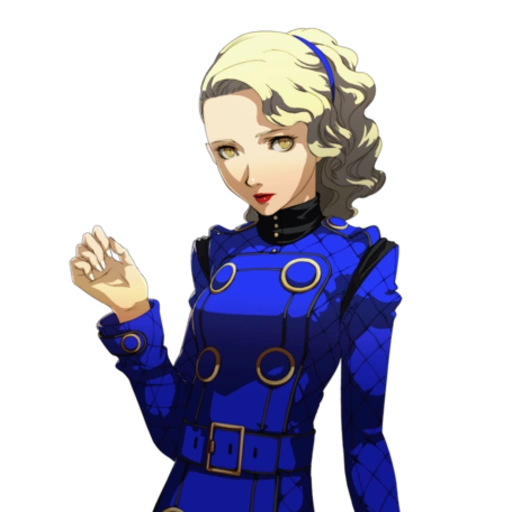 |
The protagonist can start Margaret's Social Link as early as May 19th. She can be found in the Velvet Room. Margaret is available at any time the protagonist can access the Velvet Room, and furthering the Social Link does not cause time to advance. | Empress | None |
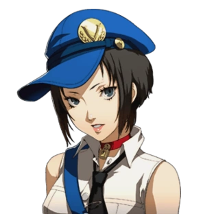 |
The protagonist can start Marie's Social Link as early as April 18th. To initiate the Social Link, enter the Velvet Room and choose "Check on Dwellers" followed by "Listen to Marie's request." She is found outside the Velvet Room entrance in the Central Shopping District during the day when the protagonist is not in the middle of an investigation. If the protagonist enters the Velvet Room while Marie is outside, she will return to the Velvet Room and not leave again for the day. However, the protagonist can still spend time with her by choosing "Check on Dwellers" and then "Listen to Marie's request." | Aeon | None |
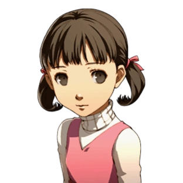 |
Nanako Dojima is your cousin. Her father is Ryotaro Dojima. She is a huge fan of Junes and can be heard constanty singing "Everyday's Great At Your Junes!!!". She has also lost her mother and since Ryotaro is constantly at work she is often left on her own. | Justice | None |
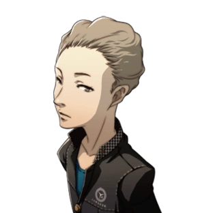 |
The protagonist can start Naoki's Social Link as early as June 15th/June 20th, first meeting Naoki on June 7th/June 8th during a mandatory storyline event after Kinshiro Morooka signs him up for the Student Health Association. Afterward, the protagonist must speak to Naoki three more times on the first floor of Yasogami High to formally establish the Social Link, though this requires rank three Understanding (Generous). | Hanged Man | None |
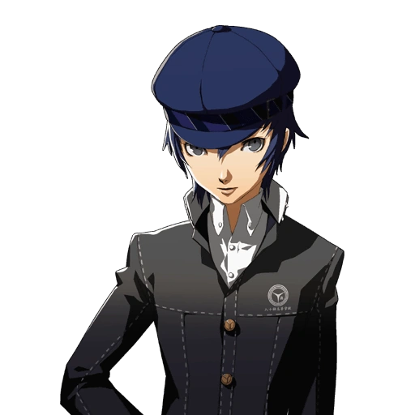 |
The protagonist can start Naoto's Social Link on October 22nd at the earliest, after helping Naoto by talking to a man in the black suit who can be found in the Central Shopping District starting on October 21st. She can be found during the day down the end of the hallway on the first floor of Yasogami High. Her Social Link cannot be progressed on days off from school. | Fortune | Sukuna-Hikona and Yamato-Takeru |
| The protagonist automatically starts Rise's Social Link on July 23rd, a few days after rescuing her from Marukyu Striptease within the Midnight Channel. She can be found during the day outside in the hallway in the first floor of Yasogami High. On days off, Rise can be found outside the tofu shop in the Central Shopping District. | Lovers | Kanzeon and Kouzeon | |
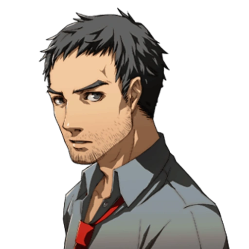 |
Ryotaro Dojima is your uncle who agrees to be your guardian for the year as your parents are busy with work. He is also the father of your cousin Nanako Dojima. Ryotaro is the main detective for the local police. He has also lost his wife. | Hierophant | None |
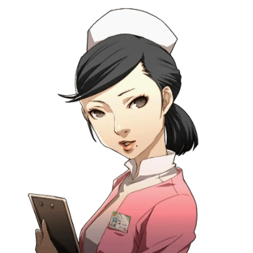 |
The protagonist can start Sayoko's Social Link as early as May 26th, provided that he takes the hospital job posting as soon as it becomes available on May 25th and goes to work at the hospital on the same day, which requires Rank 3 Diligence (Strong). The Social Link won't be established until the protagonist visits the hospital twice. She can be found during the night when working in the hospital by taking the bus in Central Shopping District. | Devil | None |
| The protagonist can start Shu's Social Link as early as May 26th after applying as a part-time tutor, which requires rank 5 Understanding (Saintly). He can be found at night by taking the bus in the Central Shopping District. | Tower | None | |
| The protagonist automatically starts Teddie's Social Link on June 24th. The Social Link is automatically ranked during certain story events, and dialogue options do not grant points. | Star | Kintoki-Douji and Kamui | |
| The nature of Adachi's character results in a highly irregular Social Link. The protagonist can start Adachi's Social Link as early as May 13th shortly after completing Yukiko's Castle. He is found in the Junes Department Store during the day and the Central Shopping District in front of the gas station at night. The deadline for the first six ranks is November 1st, and if the Social Link is not Rank 6 after this, it will be locked for the rest of the game. His Social Link is unavailable as long as a victim is inside the Midnight Channel. | Jester | None | |
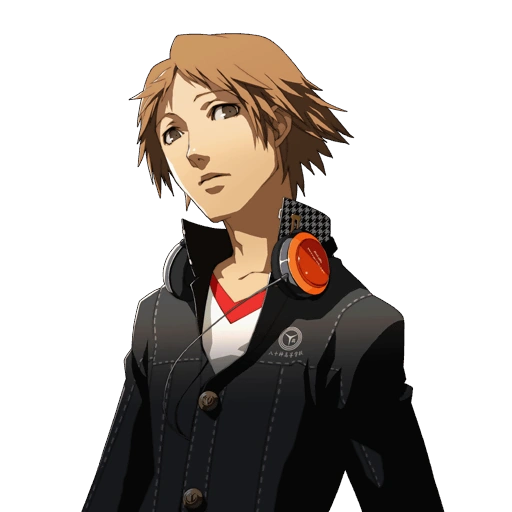 |
The protagonist automatically starts Yosuke's Social Link on April 16th, the day after he awakens to his Persona after fighting his Shadow in the TV World. He can be found during the day down the end of the hallway on the second floor of Yasogami High. During days off, Yosuke is hanging out at the west entrance of Junes near the elevators that lead to the food court. | Magician | Jiraiya and Susano-o |
| The protagonist automatically starts Yukiko's Social Link on May 17th, the day Kanji Tatsumi is kidnapped. She can be found during the day on the first floor of Yasogami High in front of the bulletin board. On days off, Yukiko hangs out around the Yomenaido Bookstore. | Priestess | Konohana Sakuya and Amaterasu | |
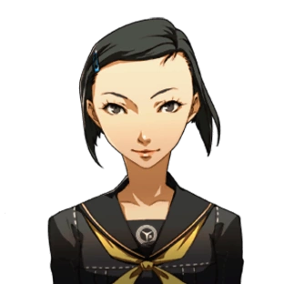 |
The protagonist can start Yumi's Social Link as early as April 25th by joining the Drama Club, found on the first floor of the Practice Building in Yasogami High. | Sun | None |